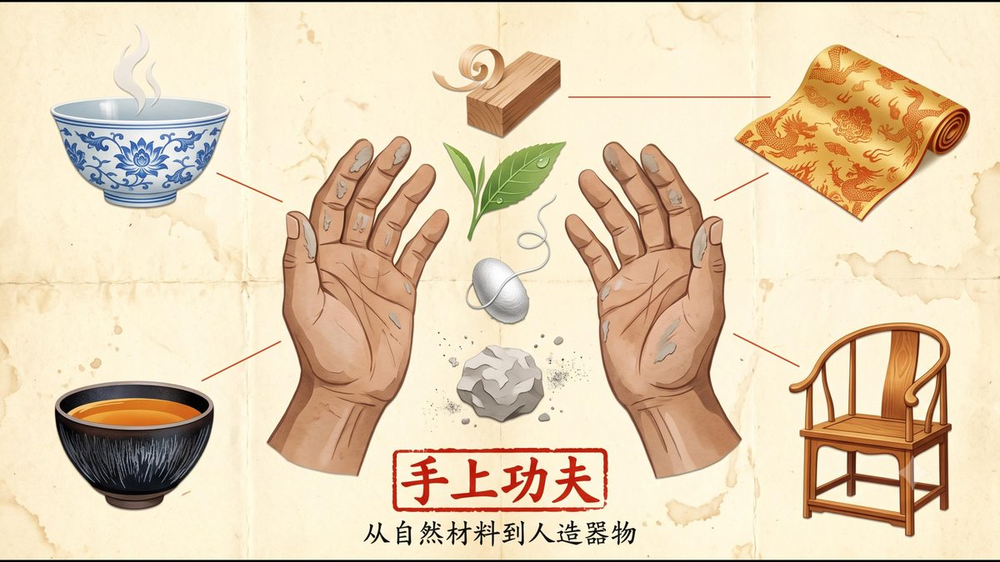
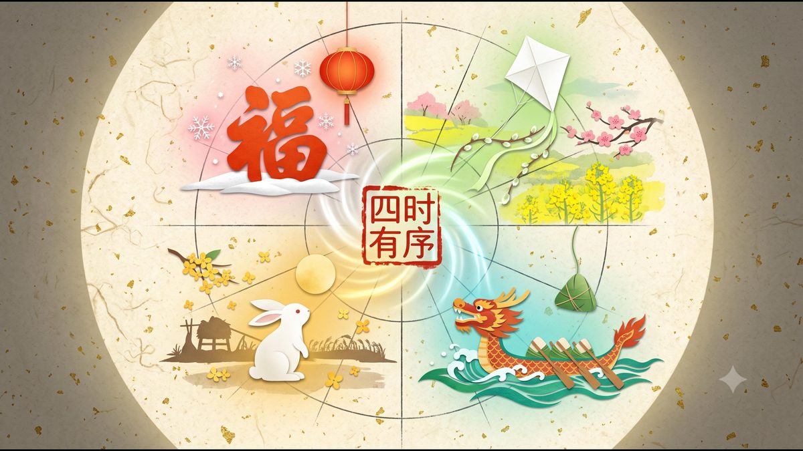

AIGC DOCUMENTARY SERIES
风物中国。
一套关于「物」的系列纪录片，核心始终是「人」。策划、审美、叙事是我的；AI，是这次用来描摹中国的那支笔。
5 个系列
110 个片段
总时长约 18 分 20 秒
纸工艺拼贴 × Vox 解说风格
一个叙事矩阵
五个系列不是并列的五集，而是中国文化的五个基本面——合在一起，物、时、空、人、艺，各占一维。
物
食俗文行
横截面 · 四个切面看文化的广度
艺
手上功夫
纵深度 · 深入匠人造物，见微知著
时
四时有序
时间轴 · 沿四季轮回展开生活画卷
空
万里河山
空间轴 · 沿山河通道丈量文明版图
人
百态人生
人的维度 · 回归具体的人，四种理想人生
已完成的三部
每集 22 个片段（序章 + 四篇章 + 尾声），成片约 3 分 40 秒。在小红书 / 视频号同步更新。


河山
EP.04 · 空间轴
万里河山
沿着山河通道丈量文明版图
一条黄河边，有整个民族的来路。
制作中人生
EP.05 · 人的维度
百态人生
回归到具体的人，四种理想人生
一盏青灯下，有读书人的一生。
制作中一套美学体系
不是一条条零散的 AI 视频，而是一套统一的视觉语言——每个系列有专属色调，五个系列共享同一套视觉基因。
纸工艺拼贴
剪纸、旧纸纹理与拼贴质感，让 AI 生成的画面落回手工的温度。
Vox 式解说
动作图形 + 信息密度 + 节奏感的解说叙事，把宏大叙事讲成可感知的具体事物。
可复用的框架
一套提示词写作框架与叙事骨架，可迁移到任何文化主题上继续生长。
还会继续画下去
五个系列之外，这份中国文化的影像档案还有更多留白：
一捧泥土里，有匠人的手温。
一枚饺子里，有土地的恩泽。
一盏青灯下，有读书人的一生。
一条黄河边，有整个民族的来路。
风物长存，中国不老。
这套「人做策划与审美、AI 负责执行」的流程，也可以用来讲你的品牌、你的城市、你的文化项目。
想聊聊，来岛上找我 →